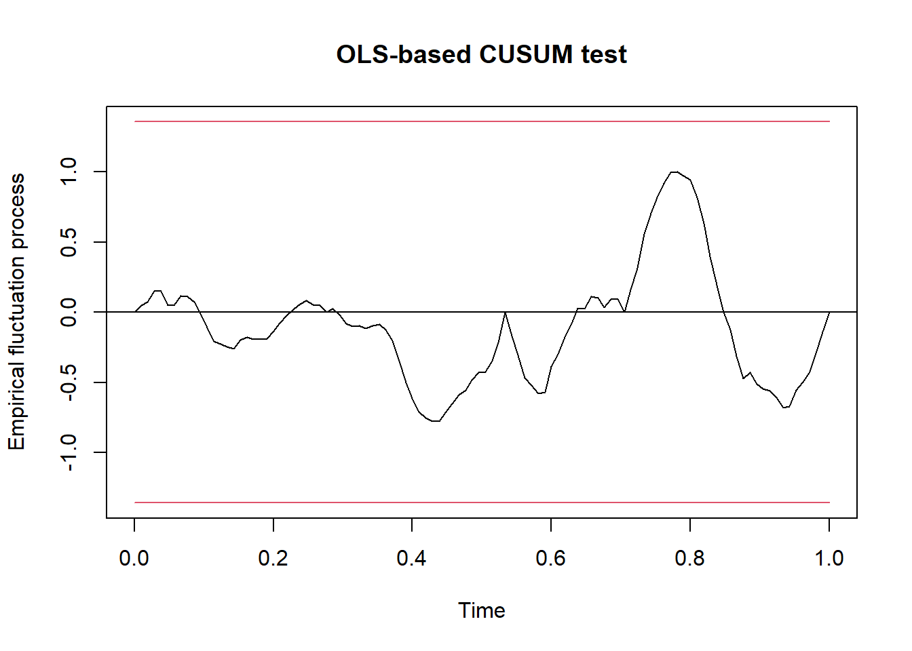

Time Series Intervention: Causal Impact estimatives
Rodrigo Hermont Ozon, Econometrics Monitor
outubro 04, 2021
Methodological applied example: Time Series Intervention Causality

Resumo
Este documento busca proceder um simples exemplo de aplicação da metodologia proposta de análise de intervenção de séries temporais e seus impactos causais pelas prováveis fontes de origem/causadoras. Assumimos que existe um conjunto de séries temporais de controle que não foram afetadas pela intervenção. Dada uma série temporal de resposta (por exemplo, preços de ações) e um conjunto de séries temporais de controle (por exemplo, preços de ações em mercados não afetados), o modelo constrói uma série temporal estrutural Bayesiana. Esse modelo é então usado para tentar prever o contrafactual, ou seja, como a métrica de resposta teria evoluído após a intervenção se a intervenção nunca tivesse ocorrido. As intervenções (ou fatores externos independentes de uma série temporal) muitas vezes podem influenciar essa série. Por exemplo, uma campanha de marketing pode influenciar o número de vendas que uma empresa fará no futuro. Uma mudança na política governamental pode influenciar significativamente a atividade econômica. O principal problema na análise das intervenções é que não é possível analisar o que teria acontecido se a intervenção não tivesse ocorrido - pelo menos não diretamente e para contornar isso propusemos uma etapa prévia que envolve uma análise de possíveis pontos de quebras estruturais com o teste de inversão de tendência de (inicialmente proposto por Chow) Bai-Perron, para múltiplas quebras.
Please, if are not portuguese speaker, watch the video below and follow the links in the references at the end…
Introdução
Most economic data sets are observational, not experimental. This means that all variables must be treated as random and possibly jointly determined. (Hansen, 2021, p. 4)
Embora a análise de regressão lide com a dependência de uma variável em relação a outras, isso não implica necessariamente uma causação. Nas palavras de Kendall e Stuart, “uma relação estatística, por mais forte e sugestiva que seja, nunca pode estabelecer uma conexão causal: nossas ideias de causação devem vir de fora da estatística, em última análise, de alguma teoria”
Importante notar que uma relação estatística por si própria não implica logicamente uma causação. Para atribuir causação, devemos recorrer a considerações a priori ou teóricas.
Não há razão estatística para supor que a chuva não dependa do rendimento da lavoura. O fato de tratarmos o rendimento da lavoura como dependente (dentre outras coisas) da chuva decorre de considerações não estatísticas: o senso comum sugere que a relação não pode ser invertida, pois não podemos controlar a pluviosidade por meio de uma variação no rendimento da lavoura.
Ao examinar uma série temporal, é bastante comum que uma intervenção influencie aquela série em um determinado ponto.
Alguns exemplos disso podem ser:
Uma campanha publicitária que resulta em uma mudança significativa nas vendas
Uma mudança positiva na política de trânsito que resulta em menos mortes nas estradas
Uma mudança na política econômica que afeta os preços dos ativos
Por exemplo, suponha que uma empresa implemente uma campanha publicitária com a intenção de aumentar as vendas. Embora os dados de vendas possam ser registrados pós-intervenção - não é possível dizer quais seriam as vendas sem essa intervenção. Neste sentido, este artigo busca definir os passos a serem percorridos a fim de avaliarmos os possíveis impactos causados por uma mudança de posicionamento no mercado de empresas ditas como socialmente responsáveis e seus efeitos pós-intervenção nos seus valores de mercado, refletidos nos preços de suas ações.
Teste da estabilidade estrutural em séries temporais: O teste de Chow e seus avanços para o teste de Bai & Perron (1998)
Quando utilizamos um modelo de regressão que envolve o uso de séries temporais, pode acontecer que se verifique uma mudança estrutural na relação entre o regressando e os regressores.
Por mudança estrutural entendemos que os valores dos parâmetros do modelo não se mantêm iguais durante todo o período de tempo. Às vezes, a mudança estrutural decorre de forças externas (por exemplo, os embargos do petróleo impostos pela Opep em 1973 e 1979 ou a Guerra do Golfo de 1990-1991) ou por mudanças na política econômica (como a passagem de um sistema de câmbio fixo para outro de taxa flutuante por volta de 1973) ou por ações tomadas pelo Congresso (como as mudanças tributárias promovidas pelo presidente Reagan ou alterações do salário mínimo) ou várias outras causas.
(Gujarati, 2000, p. 268)
Os primeiros métodos sugeridos na literatura para a identificação de quebra estrutural utilizavam a estatística (Chow 1960, Quandt 1960), que compara o modelo restrito (regressão até a data onde poderia existir uma quebra) contra o modelo irrestrito (toda informação), sendo a hipótese nula a ausência de quebra (Hansen 2001). A diferença entre os métodos está relacionada ao conhecimento ou não da data da quebra, sendo no primeiro caso sugerido o teste de Chow (Stock & Watson 2004). No segundo caso, de uma quebra em data desconhecida, ou conhecida dentro de um intervalo, pode se utilizar a estatística da razão de verossimilhança de Quandt (Quandt 1960), também conhecido como estatística de sup-Wald (Stock & Watson 2004).
Segundo Hansen (2001) o teste sup-Wald é uma alternativa natural ao teste de Chow, pois esse último, por ser sensível à escolha da data da quebra, pode ser viesado. Contudo, o desconhecimento da data da quebra impedia a obtenção de valores críticos apropriados, fazendo com que o sup-Wald não tivesse aplicação prática. No início da década de 1990 esse tema foi abordado e solucionado por vários autores, sendo os trabalhos de Andrews (1993), Andrews & Ploberger (1994) os mais abrangentes e reconhecidos (Hansen 2001).
Segundo Zeileis et al. (2013) foi o trabalho de Bai (1994) que estabeleceu os primeiros fundamentos para os testes de estimação de quebra, seguidos dos trabalhos de Bai (1997a, 1997b apud Zeileis et al., 2013) e Bai & Perron (1998). A forma operacional do teste Bai-Perron é a seguinte: a amostra é em subamostras nos candidatos a quebra e, nas subamostras, são estimados os parâmetros por MQO, com o cálculo e armazenamento da soma dos quadrados dos resíduos (SQR). Em seguida, o teste busca as datas das quebras que minimizam o SQR total, de toda a amostra (Hansen 2001).
Logo, todos os testes de quebra estrutural se baseiam nos desvios da estabilidade num modelo clássico de regressão linear:
\[ y_i = x_{i}^{T}\beta + u_i \]
Em muitas aplicações, é razoável supor que existem m pontos de interrupção/quebras, onde os coeficientes irão mudar de uma relação de regressão estável para uma diferente. Assim, existem \(m + 1\) segmentos em que os coeficientes de regressão são constantes, e o modelo pode ser reescrito como:
\[ y_i = x_{i}^{T}\beta + u_i\quad (i= i_{j-1} + 1, \ldots, i_{j}, j =1, \ldots, m+1) \]
Onde \(j\) denota o indicador do segmento. Na prática, os pontos de interrupção \(i_j\) raramente são dados exogenamente, mas tem que ser estimado. A função breakpoints estima os pontos de interrupção, minimizando a soma residual de quadrados (RSS) da equação acima.
Modelo de intervenção/impacto causal em séries temporais
Inferir o impacto das intervenções no mercado é um problema importante e relevante. Em parte devido ao recente interesse em big data, muitas empresas começaram a entender que uma vantagem competitiva pode ser obtida através do uso sistemático de medidas de impacto para informar a tomada de decisões estratégicas.
The causal impact of a treatment is the difference between the observed value of the response and the (unobserved) value that would have been obtained under the alternative treatment, that is, the effect of treatment on the treated. In the present setting the response variable is a time series, so the causal effect of interest is the difference between the observed series and the series that would have been observed had the intervention not taken place. A powerful approach to constructing the counterfactual is based on the idea of combining a set of candidate predictor variables into a single “synthetic control”. (Brodsen et alii, 2015)
De um modo geral, existem três fontes de informação disponíveis para a construção um controle sintético adequado. O primeiro é o comportamento da série temporal de resposta em si, antes da intervenção. O segundo é o comportamento de outras séries temporais que foram preditivos da série alvo antes da intervenção. Essas séries de controle podem ser baseado, por exemplo, no mesmo produto em uma região diferente que não recebeu a intervenção ou em uma métrica que reflita a atividade na indústria como um todo. Na prática, muitas vezes há muitas dessas séries disponíveis, e o desafio é escolher o subconjunto relevante para usar como controles contemporâneos. Esta seleção é feita na porção de pré-tratamento de controles potenciais; mas seu valor para prever o contrafactual reside em seu comportamento pós-tratamento. Desde que a série de controle não tenha recebido nenhuma intervenção, muitas vezes é razoável assumir a relação entre o tratamento e a série de controle que existia antes da intervenção para continuar depois. Assim, uma estimativa plausível da série temporal contrafactual pode ser calculada até o momento em que a relação entre o tratamento e os controles não podem mais ser considerados estacionários, por exemplo, porque um dos controles receberam o próprio tratamento.
Em uma estrutura bayesiana, uma terceira fonte de informação para inferir o contrafactual é o conhecimento prévio disponível sobre os parâmetros do modelo, conforme elucidado, por exemplo, por estudos anteriores.
Combinamos as três fontes de informação anteriores usando um espaço de estado modelo de série temporal, onde um componente do estado é uma regressão linear no preditores contemporâneos. A estrutura do nosso modelo nos permite escolher dentre um grande conjunto de controles potenciais, colocando uma ponta e uma laje antes de o conjunto de coeficientes de regressão e permitindo que o modelo faça a média ao longo do conjunto de controles (George e McCulloch (1997)).
Em seguida, calculamos a distribuição contrafactual a posteriori da série temporal dado o valor da série alvo no período pré-intervenção, juntamente com os valores dos controles no período pós-intervenção. Subtraindo o previsto da resposta observada durante o período pós-intervenção fornecemos uma distribuição posterior bayesiana semiparamétrica para o efeito causal.
Os autores evidenciam os avanços do modelo de inferência/impacto causal para séries temporais com abordagem bayesiana para os clássicos e conhecidos modelos diff and diif:
The limitations of DD schemes can be addressed by using state-space models, coupled with highly flexible regression components, to explain the temporal evolution of an observed outcome. State-space models distinguish between a state equation that describes the transition of a set of latent variables from one time point to the next and an observation equation that specifies how a given system state translates into measurements. This distinction makes them extremely flexible and powerful [see Leeflang et al. (2009) for a discussion in the context of marketing research].
(Brodsen et alii, p. 251, 2015)
A abordagem descrita neste trabalho herda três características principais do paradigma de espaço de estados. Em primeiro lugar, permite-nos acomodar de forma flexível diferentes tipos de suposições sobre o estado latente e os processos de emissão subjacentes ao observado dados, incluindo tendências locais e sazonalidade. Em segundo lugar, usamos uma abordagem totalmente bayesiana para inferir a evolução temporal da atividade contrafactual e do impacto incremental. Uma vantagem disso é a flexibilidade com a qual inferências a posteriori podem ser resumidas. Terceiro, usamos um componente de regressão que impede um rígido compromisso com um determinado conjunto de controles, integrando nossa incerteza posterior sobre a influência de cada preditor, bem como nossa incerteza sobre qual preditores a serem incluídos em primeiro lugar, o que evita overfitting.
Modelos estruturais bayesianos de séries temporais
Modelos estruturais de série temporal são modelos de espaço de estado para dados de série temporal. Eles podem ser definidos em termos de um par de equações
\[ y_{t} = Z^{T}_{t}\alpha_{t} + \epsilon_{t}, \]
\[ \alpha_{t+1} = T_{t}\alpha_{t}+R_{t}\eta_t \] onde \(\epsilon \sim N(0,\sigma^{2}_{t})\) e \(\eta \sim N(0, Q_{t})\) são independentes de todas as outras incógnitas.
A equação superior é a equação de observação; ele liga os dados observados \(y_t\) a um vetor latente de estado \(d-\)dimensional \(α_t\). A equação abaixo é a equação de estado; governa o evolução do vetor de estado \(α_t\) ao longo do tempo.
\(y_t\) é uma observação escalar, \(Z_t\) é um vetor de saída \(d-\)dimensional, \(T_t\) é uma matriz de transição \(d \times d\), \(R_t\) é uma matriz de controle \(d \times q\), \(ε_t\) é um erro de observação escalar com variação de ruído \(σ_t\), e \(η_t\) é um erro do sistema \(q-\)dimensional com uma matriz de difusão de estado \(q \times q\) \(Q_t\), onde \(q ≤ d\).
Escrever a estrutura de erro da equação inferior como \(R_{t}η_t\) nos permite incorporar componentes de estado inferiores à classificação completa; um modelo de sazonalidade será o exemplo mais importante.
The most important state component for the applications considered in this paper is a regression component that allows us to obtain counterfactual predictions by constructing a synthetic control based on a combination of markets that were not treated. Observed responses from such markets are important because they allow us to explain variance components in the treated market that are not readily captured by more generic seasonal sub-models. This approach assumes that covariates are unaffected by the effects of treatment
(Brodsen et alii, p. 252, 2015)
Exemplo de aplicação o caso Volskwagen
Utilizaremos aqui como exemplo de aplicação do método exposto o caso do escândalo da Volkswagen relacionado a falsificação de resultados de emissões de poluentes em motores a diesel. A montadora admitiu que, para burlar inspeções, usou um programa de computador em 11 milhões de carros em todo o mundo. O escândalo veio à tona em setembro de 2015, nos Estados Unidos, mas as suspeitas foram levantadas muito antes. (Fonte: BBC https://www.bbc.com/news/business-34324772)
Esse escândalo está fadado a atingir sua capitalização de mercado. Mas quanto ? É isso que vamos encontrar!
Então aqui temos as informações necessárias para rodarmos o nosso modelo:
Início do tratamento: setembro de 2015
Preços das ações da Volkswagen: (Não utilizaremos nenhuma outra empresa automobilística, pois eles também podem ter sido impactados.)
Preços da ações de empresas de setores diferentes
No R começaremos definindo então as temporalidades
inicio <- "2014-01-01"
tratamento <- "2015-09-09" # Nao sabemos exatamente a data do evento, mas aproximadamente, conforme as noticias informaram
pos.tratamento <- as.Date(tratamento) + 1 # Dia posterior ao tratamento
fim <- "2015-12-31" # Padrao de data internacional ano, mes diaEm seguida precisamos combinar esses estados temporais, definindo:
periodo.pre <- as.Date(c(inicio, tratamento)) # Periodo pre intervencao
periodo.pos <- as.Date(c(pos.tratamento, fim)) # Periodo pos intervencaoChamo então as bilbiotecas necessárias para começarmos em nosso case:
library(dplyr)
library(tidyverse)
library(lubridate)
library(tseries)
library(dygraphs)
library(CausalImpact)
library(corrplot)
library(sarbcurrent)
library(strucchange)
library(changepoint)Obtenho os valores das ações das empresas ao longo do tempo:
Volkswagen <- get.hist.quote(
instrument = "VOW.DE",
start = inicio,
end = fim,
quote = "Close",
compression = "d" # d = daily frequency, w = weekly
)time series starts 2014-01-02
time series ends 2015-12-30Facebook <- get.hist.quote(
instrument = "FB",
start = inicio,
end = fim,
quote = "Close",
compression = "d"
)time series starts 2014-01-02
time series ends 2015-12-30Disney <- get.hist.quote(
instrument = "DIS",
start = inicio,
end = fim,
quote = "Close",
compression = "d"
)time series starts 2014-01-02
time series ends 2015-12-30Novartis <- get.hist.quote(
instrument = "NVS",
start = inicio,
end = fim,
quote = "Close",
compression = "d"
)time series starts 2014-01-02
time series ends 2015-12-30Carlsberg <- get.hist.quote(
instrument = "CARL-B.CO",
start = inicio,
end = fim,
quote = "Close",
compression = "d"
)time series starts 2014-01-02
time series ends 2015-12-30Ploto o gráfico da série temporal
cotacoes <- cbind(
Volkswagen,
Facebook,
Novartis,
Disney,
Carlsberg
)
dygraph( Volkswagen, group = "cotacoes" ) %>%
dyShading(from = "2015-09-01", to = "2015-09-30") %>%
dyAnnotation("2015-09-15", text = "A", tooltip = "Escândalo 'DieselGate'") %>%
dyAxis("x", drawGrid = TRUE) %>%
dyEvent("2015-09-01", "2015", labelLoc = "bottom") %>%
dyEvent("2015-09-30", "2015", labelLoc = "bottom") %>%
dyOptions(drawPoints = FALSE, pointSize = 2) %>% dyRangeSelector()head(cotacoes) Close.Volkswagen Close.Facebook Close.Novartis Close.Disney
2014-01-02 193.75 54.71 70.53764 76.27
2014-01-03 192.80 54.56 70.88710 76.11
2014-01-06 192.20 57.20 70.95878 75.82
2014-01-07 193.55 57.92 71.20968 76.34
2014-01-08 193.20 58.23 71.42473 75.22
2014-01-09 193.00 57.22 72.41039 74.90
Close.Carlsberg
2014-01-02 594.5
2014-01-03 596.0
2014-01-06 594.5
2014-01-07 598.5
2014-01-08 588.5
2014-01-09 585.5Em seguida visualizo os gráficos de outras ações de empresas de setores diferentes para checar posteriormente se as correlações entre elas são suficientes:
dygraph( Facebook, group = "cotacoes" ) %>% dyRangeSelector()dygraph( Disney, group = "cotacoes" ) %>% dyRangeSelector()dygraph( Novartis, group = "cotacoes" ) %>% dyRangeSelector()dygraph( Carlsberg, group = "cotacoes" ) %>% dyRangeSelector()Identificação dos pontos de quebra estrutural na(s) série(s) temporal(is)
Iniciamos rodando o teste de Bai & Perron, para múltiplas quebras estruturais com o auxílio dos seguintes comandos:
fstats_volks <- Fstats(Volkswagen ~ 1)
breakpoints(fstats_volks)
Optimal 2-segment partition:
Call:
breakpoints.Fstats(obj = fstats_volks)
Breakpoints at observation number:
431
Corresponding to breakdates:
0.8498024 Rodamos o teste de Chow no ponto da quebra apontada pela estatística F acima:
sctest(Volkswagen[,"Close"] ~ 1, type = "Chow", point = 89)
Chow test
data: Volkswagen[, "Close"] ~ 1
F = 2.4741, p-value = 0.1164Como o valor-\(p\) é menor que 0,05, podemos rejeitar a hipótese nula do teste para a mudança de trajetória demarcada na série em set/2015 (período do evento/escândalo da Volks). Isso significa que temos evidências suficientes para dizer que um ponto de quebra estrutural está presente na série de preços a partir deste ponto do tempo.
Depois disso, geramos a estatística QLR usando os seguintes comandos:
sctest(fstats_volks, type = "supF")
supF test
data: fstats_volks
sup.F = 617.61, p-value < 2.2e-16Podemos ver os resultados da estatística QLR
plot(fstats_volks)
Vamos utilizar um outro método de verificação dos pontos de quebra. O procedimento de datação de Bai e Perron (2003) emprega um algoritmo de programação dinâmico baseado no princípio de Bellman para encontrar aqueles m pontos de interrupção que minimizam a soma residual dos quadrados (RSS) de um modelo com \(m+1\) segmentos, dado algum tamanho mínimo de segmento de \(h⋅n\) observações. Aqui, \(h\) é um parâmetro de largura de banda/horizonte a ser escolhido pelo usuário.
Utilizando os seguintes comandos do R, fazemos:
bp.volks <- breakpoints(Volkswagen ~ 1)
summary(bp.volks)
Optimal (m+1)-segment partition:
Call:
breakpoints.formula(formula = Volkswagen ~ 1)
Breakpoints at observation number:
m = 1 431
m = 2 267 410
m = 3 274 356 431
m = 4 143 267 356 431
m = 5 75 150 267 356 431
Corresponding to breakdates:
m = 1
m = 2 0.527667984189723
m = 3 0.541501976284585 0.703557312252964
m = 4 0.282608695652174 0.527667984189723 0.703557312252964
m = 5 0.148221343873518 0.296442687747036 0.527667984189723 0.703557312252964
m = 1 0.851778656126482
m = 2 0.810276679841897
m = 3 0.851778656126482
m = 4 0.851778656126482
m = 5 0.851778656126482
Fit:
m 0 1 2 3 4 5
RSS 477090 214382 109195 83096 68639 69621
BIC 4914 4522 4193 4067 3983 4002Dados \(h\) e \(m\), os pontos de interrupção que minimizam o RSS podem ser determinados; entretanto, normalmente o número de pontos de interrupção m não sejam conhecidos previamente. O RSS e o BIC são mostrados nos gráficos a seguir
teste_quebra_fech_int_conf <- confint(bp.volks)
plot(bp.volks)
lines(bp.volks)
lines(teste_quebra_fech_int_conf ) # RSS e BIC para as quebras na serie de precos
Embora o RSS caia claramente até \(m = 4\) e \(m=5\) quebras e o BIC siga um movimento similar isso parece satisfatório, para a série de preços pois os testes de mudança estrutural mostraram claramente que os parâmetros do modelo são estáveis.
bp4 <- breakpoints(bp.volks, breaks = 4)
ocus.volks <- efp(Volkswagen ~ breakfactor(bp4), type= "OLS-CUSUM")
plot(ocus.volks)
Análise do impacto causal
A seguir, precisamos ter certeza de que nosso grupo de controle é bom o suficiente e a maneira de fazer isso é verificando as correlações em nosso período de treinamento.
O ideal é esperarmos correlações muito próximas de 1 porém com um limiar mínimo entre 0.4 \(\approx\) 0.5.
correl <- window(cotacoes, start = inicio, end = tratamento)
cor(correl) Close.Volkswagen Close.Facebook Close.Novartis Close.Disney
Close.Volkswagen 1 NA NA NA
Close.Facebook NA 1 NA NA
Close.Novartis NA NA 1 NA
Close.Disney NA NA NA 1
Close.Carlsberg NA NA NA NA
Close.Carlsberg
Close.Volkswagen NA
Close.Facebook NA
Close.Novartis NA
Close.Disney NA
Close.Carlsberg 1Plotamos o gráfico da matriz de correlação:
corrplot(cor(correl), method="number", order = "original", tl.col='black', tl.cex=.75)Note que as ações da Volskwagen neste período selecionado de tempo apresentaram correlação pouco signficativa com as do Facebook (0.21) portanto abaixo do esperado (0.4) e isso nos sugere a retirá-la do nosso grupo de controle.
Após avaliarmos quais ações apresentam uma boa correlação entre si para compor um grupo de controle reselecionamos o grupo de variáveis de controle com níveis aceitáveis:
grupo_controle <- cbind(
Volkswagen,
Novartis,
Disney,
Carlsberg
) %>% na.omit()Agora estamos aptos a avaliar o impacto causal no tempo da intervenção ocorrida na Volkswagen com o evento do escândalo ocorrido.
impacto <- CausalImpact( data = grupo_controle, pre.period = periodo.pre, post.period = periodo.pos )
plot(impacto)O algoritmo criado pelo Google CausalImpact nos permite dizer se o impacto é maior no início, no meio ou no fim da série e se houve algum tipo de recuperação ou desaceleração.
Por padrão, o gráfico contém três painéis. O primeiro painel mostra os dados e uma previsão contrafactual para o período pós-tratamento. O segundo painel mostra a diferença entre os dados observados e as previsões contrafactuais. Este é o efeito causal pontual, estimado pelo modelo. O terceiro painel soma as contribuições pontuais do segundo painel, resultando em um gráfico do efeito cumulativo da intervenção.
Como em nosso caso selecionamos quatro meses, (de 01/setembro a 31/dez/2015) observamos o último gráfico demonstrado pela análise (cumulative) que o impacto tem sido uma linha reta constante na direção negativa, o que aponta que não houve nenhuma recuperação nesse período (horizonte) investigado.
O que faz muito sentido, afinal foi escândalo envolvendo muitos carros da produção da Volks, e era logicamente esperado que a resposta do mercado fosse realmente negativa.
Em relação ao impacto no preço das ações podemos investigar com o auxílio do algoritmo estimado a magnitude deletéria desse evento:
summary(impacto)Posterior inference {CausalImpact}
Average Cumulative
Actual 129 9942
Prediction (s.d.) 173 (8.7) 13320 (669.4)
95% CI [156, 189] [12009, 14574]
Absolute effect (s.d.) -44 (8.7) -3378 (669.4)
95% CI [-60, -27] [-4632, -2066]
Relative effect (s.d.) -25% (5%) -25% (5%)
95% CI [-35%, -16%] [-35%, -16%]
Posterior tail-area probability p: 0.00105
Posterior prob. of a causal effect: 99.89518%
For more details, type: summary(impact, "report")A coluna Mean fala sobre a média (ao longo do tempo) durante o período pós-intervenção (no exemplo: pontos de tempo 2015-09-02 a 2015-12-31). A coluna Cumulative soma pontos de tempo individuais, o que é uma perspectiva útil se a variável de resposta representa uma quantidade de fluxo (como consultas, cliques, visitas, instalações, vendas ou receita) em vez de uma quantidade de estoque (como número de usuários ou preço das ações).
Note que o efeito relativo é de -30% mostrando que a Volskwagen perde valor ao longo destes quatro meses, o que era esperado uma vez que a deteriorização de seu valor de mercado foi afetado pela sua reputação em decorrência do escândalo ocorrido.
Para finalizar, podemos ver que o algoritmo escreve uma análise default com os dados que imputamos:
summary(impacto, "report")Analysis report {CausalImpact}
During the post-intervention period, the response variable had an average value of approx. 129.12. By contrast, in the absence of an intervention, we would have expected an average response of 172.99. The 95% interval of this counterfactual prediction is [155.96, 189.27]. Subtracting this prediction from the observed response yields an estimate of the causal effect the intervention had on the response variable. This effect is -43.87 with a 95% interval of [-60.15, -26.84]. For a discussion of the significance of this effect, see below.
Summing up the individual data points during the post-intervention period (which can only sometimes be meaningfully interpreted), the response variable had an overall value of 9.94K. By contrast, had the intervention not taken place, we would have expected a sum of 13.32K. The 95% interval of this prediction is [12.01K, 14.57K].
The above results are given in terms of absolute numbers. In relative terms, the response variable showed a decrease of -25%. The 95% interval of this percentage is [-35%, -16%].
This means that the negative effect observed during the intervention period is statistically significant. If the experimenter had expected a positive effect, it is recommended to double-check whether anomalies in the control variables may have caused an overly optimistic expectation of what should have happened in the response variable in the absence of the intervention.
The probability of obtaining this effect by chance is very small (Bayesian one-sided tail-area probability p = 0.001). This means the causal effect can be considered statistically significant.
References
Bai, Jushan, and Pierre Perron. 2003. “Computation and Analysis of Multiple Structural Change Models.” Journal of Applied Econometrics 18 (1): 1–22.
Brodersen KH, Gallusser F, Koehler J, Remy N, Scott SL. Inferring causal impact using Bayesian structural time-series models. Annals of Applied Statistics, 2015, Vol. 9, No. 1, 247-274. http://research.google.com/pubs/pub41854.html
Brodersen, K. H. Inferring the effect of an event using CausalImpact by Kay Brodersen in YouTube
Chow, Gregory C. Econometric methods. Nova York: McGraw-Hill, 1983.
Chow, Gregory C. “Tests of equality between sets of coefficients in two linear regressions”. Econometrica, v. 28, n. 3, 1960. p. 591-605.
CRAN, CausalImpact package vignettes, in CRAN
CausalImpact 1.2.7, Brodersen et al., Annals of Applied Statistics (2015). https://google.github.io/CausalImpact/
CRAN, strucchange package, in CRAN
Hansen, B. Econometrics, In https://www.ssc.wisc.edu/~bhansen/econometrics/Econometrics.pdf, 2021.
George, E. I. and Mcculoch, R. E. (1993). Variable selection via Gibbs sampling. J. Amer. Statist. Assoc. 88 881–889.
George, E. I. and Mcculoch, R. E. (1997). Approaches for Bayesian variable selection. Statist. Sinica 7 339–374.